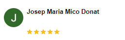

More than a tour...
A life experience!Lisbon, Portugal

Lisbon, Portugal
.jpg)
OUR SUGGESTION: Walking tour through Baixa (city center) and Alfama + Portuguese gastronomy tasting + tuk tuk ride to the west (Belém) has shown to be an excellent way to start your journey. (5 hours)
view more.jpg)
Tuk Tuk tours: Lisbon's best sights, no hassle. Belém Tower, Monument to the Discoveries, Empire Square, Jerónimos Monastery, Church of Santa Maria de Belém, Belém Pastries
view more
Rossio Square, Augusta Street, Cathedral, Santa Luzia view point, Doors of the Sun view point, Alfama, Terreiro do Paço, Commerce Sq, Bairro Alto. Walk through Lisbon, tours for up to 8 people.
view moreGarden of the Tower, Tagus River, the 25 de Abril Bridge and the King Christ. Tours for up to 8 people.
view more
Experience the history of Lisbon with our Tuk Tuk tours. Tours available for up to 4 people.
Duration 1-4hr
Group of up to 4

Embark on magical scenic tours of Lisbon. Tours available for up to 8 people.
Duration 02:30hr
Group of up to 8

Discover Lisbon on foot, exploring every detail. From group or individual walking tours.
Duration 01:30-4hr
Group of up to 8
Experience Lisbon your way with our customized packages, including Tuk Tuk, bike and walking tours, as well as van tours, boat tours, helicopter, train and more. Contact us to create something special just for you.
Custom Ride.jpeg)

.jpeg)
.jpeg)
.jpeg)
Damián was an incredible guide! We learned so much about the history is Lisboa as he explained landmarks while riding the tuk-tuk, as well as in certain places where he stopped for us to get off and look around. So friendly and an overall really enjoyable and well-rounded trip. A great way to get a look and feel for the city! Completely recommend!
Muy buen tour, Damian el que nos ha llevado ha sido muy amable en todo momento. Nos ha ayudado en todo y nos ha dado buenas recomendaciones. Muy recomendable.
Damian is very nice and showed us wonderful views of Lisbon
"Encantador, apasionado, la mejor manera de visitar Lisboa"
Maravilloso paseo,
Damián muy amable nos dio un tour muy bonito y cómodo. Repetiremos. Gracias
El chico que conducia super agradable, cads poco para para hacer fotos y explicar los sitios, incluso tomar un chupito portugues.recomendablr para conocer lisboa si tienes poco tiempo y no quierea caminar
Fantástico o Tour !!! Eu minha família só temos que agradecer foi uma experiência incrível lugares lindos . E a comunicação do Luciano explicações em todo passeio super recomendo. Obrigado Tagus Tours
Super guide qui connait parfaitement les lieux et qui est tres interessant ! Nous avons passé une super apres midi. Le tour etait tres bien organisé et nous a permis d'apprendre l'histoire de Lisbonne! Je recommande vivement !

Un recorrido chulísimo con un conductor muy simpático y cercano. Muy recomendable
Damián nos ha hecho un tour excelente, con muy buenas explicaciones. Un trato muy amable.
Excellent service an hour. I had a 3 hour tour with Damian and was all o. Time and considerate to my needs, stopping for my needed morning coffee. He was on time to pick up and arranged for other activities I wanted for the day..